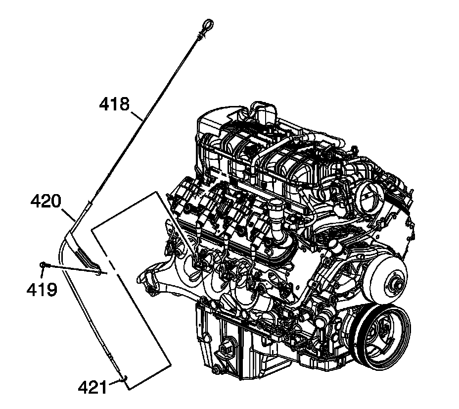

97. Oil Level Indicator and Tube Installation
Oil Level Indicator and Tube Installation

1. Inspect the O-ring seal (421) for cuts or damage. If the oil level indicator tube O-ring seal is not cut or damaged, it may be used again.
2. Lubricate the O-ring seal with clean engine oil.
3. Install the O-ring seal onto the oil level indicator tube (420).
4. Install the oil level indicator tube into the engine block and rotate into proper position.
Notice: Refer to Fastener Notice.
5. Install the tube bolt (419).
Tighten the oil level indicator tube bolt to 25 N.m (18 lb ft).
6. Install the oil level indicator (418) into the tube.